茅盾（1896年7月4日—1981年3月27日），出生于浙江省桐乡县乌镇。原名沈德鸿，笔名茅盾、郎损、玄珠、方璧、止敬、蒲牢、微明、沈仲方、沈明甫等，字雁冰中国现代作家、小说家、文学评论家、文化活动家、社会活动家，中国科学院学部委员.其主要作品有长篇小说《蚀》（包括《幻灭》《动摇》《追求》）《虹》《腐蚀》《子夜》《第一阶段的故事》《霜叶红似二月花》；短篇小说集《野蔷薇》《宿莽》《委曲》；散文集《白杨礼赞》《速写与随笔》《话匣子》《印象·思想·回忆》《炮火的洗礼》《时间的记录》；评论集《谈最近的短篇小说》《夜读偶记》《给青年作者的信》《鼓吹集》《鼓吹续集》；话剧剧本《清明前后》；中短篇小说《路》《三人行》《春蚕》《秋收》《残冬》《林家铺子》；作品集《茅盾文集》《茅盾选集》《茅盾全集》等。
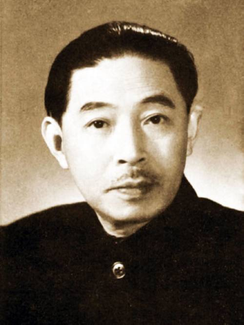 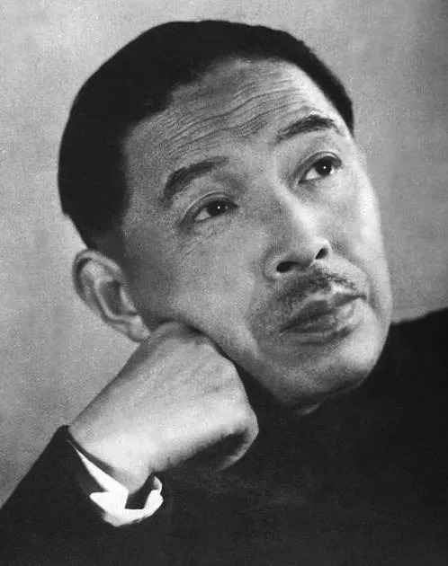 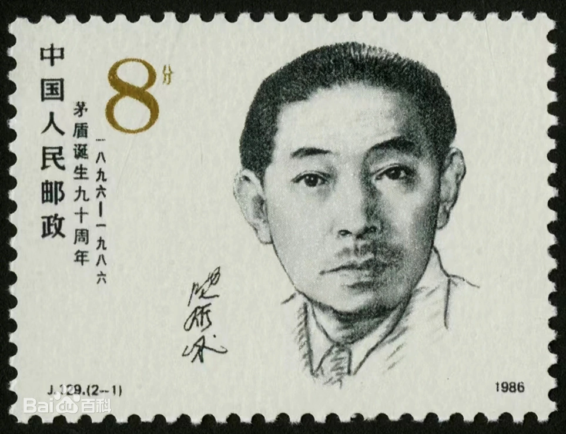 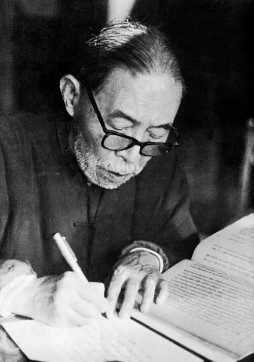 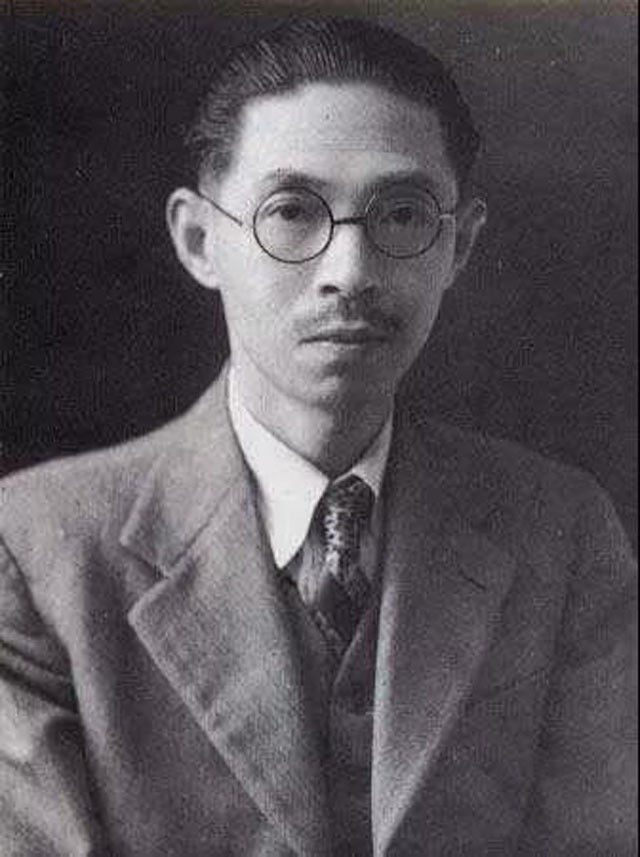丰子恺（1898年11月9日—1975年9月15日），原名丰润，又名仁、仍，号子觊，后改为丰子恺，堂号缘缘堂，笔名“TK”（FONG TSE KA），法号婴行，生于浙江省崇德县石门湾（今浙江省嘉兴市桐乡市石门镇石门湾），中国现代书画家、文学家、散文家、翻译家、漫画家，被誉为“现代中国最艺术的艺术家”、“中国现代漫画的鼻祖”。
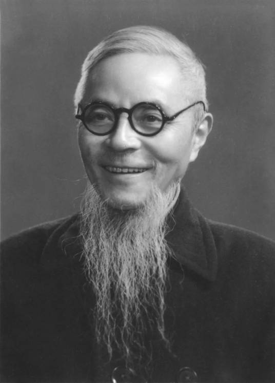 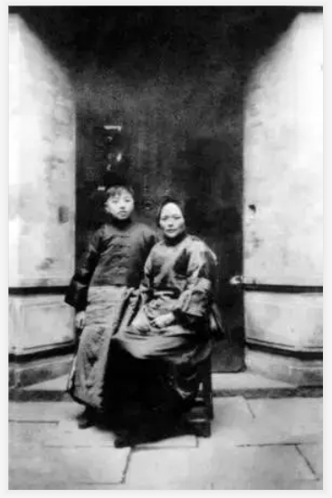 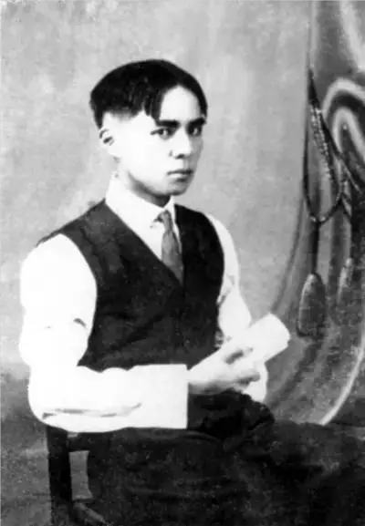 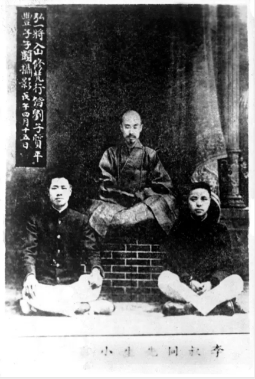 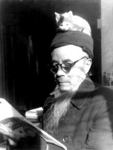王国维（1877年12月3日–1927年6月2日），初名国桢，字静安、伯隅，初号礼堂，晚号观堂，又号永观，谥忠悫。汉族，浙江省海宁州（今浙江省嘉兴市海宁）人。王国维是中国近、现代相交时期一位享有国际声誉的著名学者。1927年6月2日，王国维于颐和园中昆明湖鱼藻轩自沉。著述甚丰，有《海宁王静安先生遗书》、《红楼梦评论》、《宋元戏曲考》、《人间词话》、《观堂集林》、《古史新证》、《曲录》、《殷周制度论》、《流沙坠简》等62种。
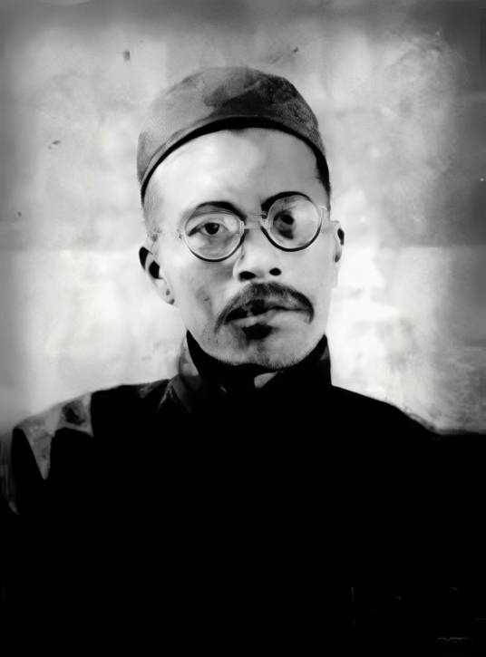 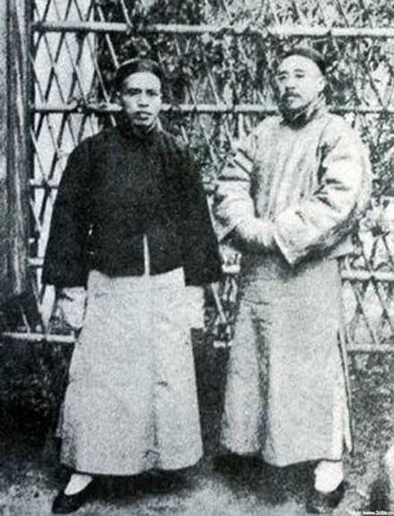 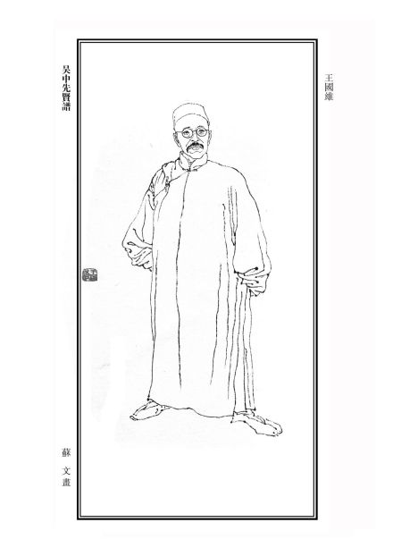 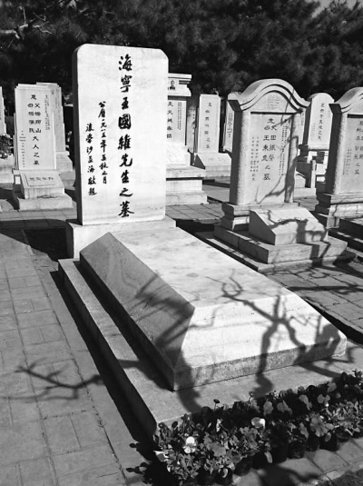 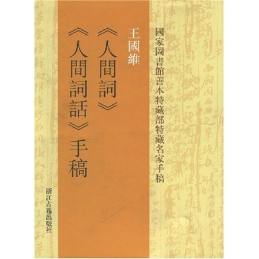